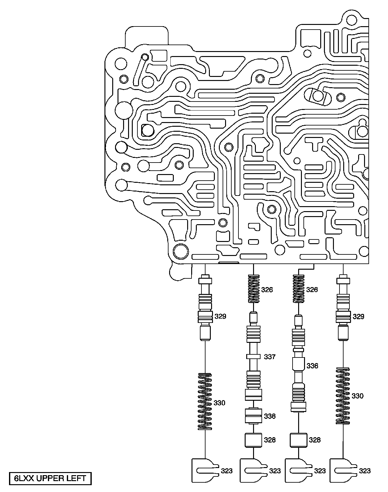
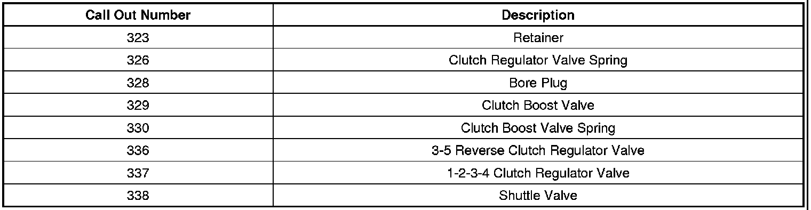
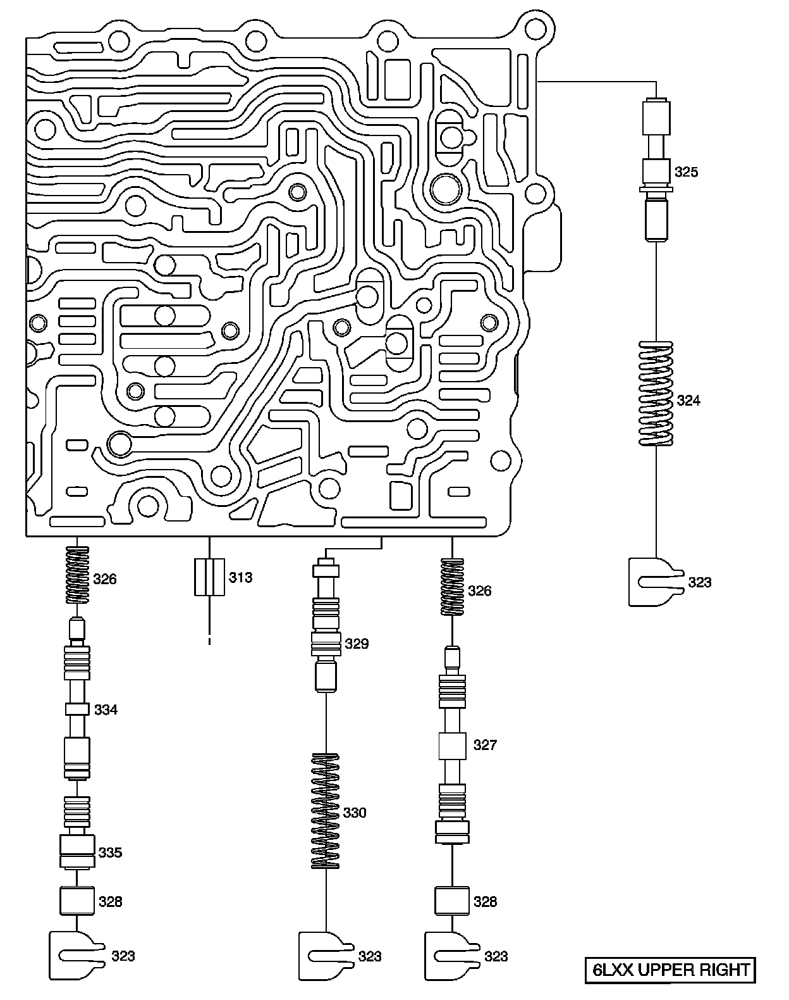
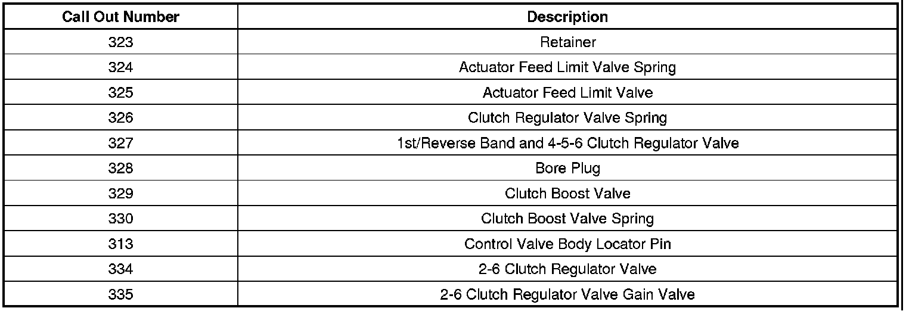
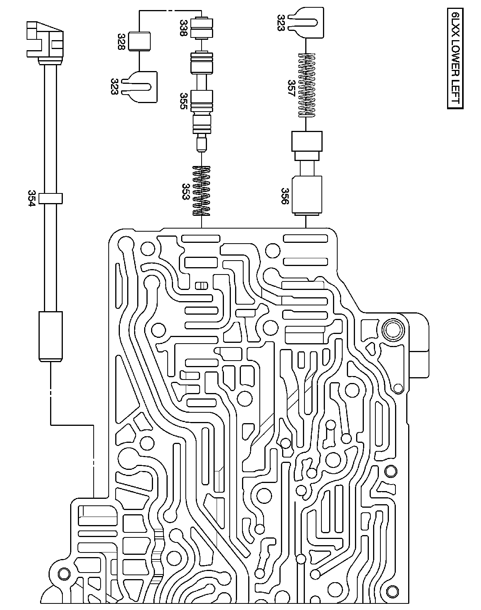
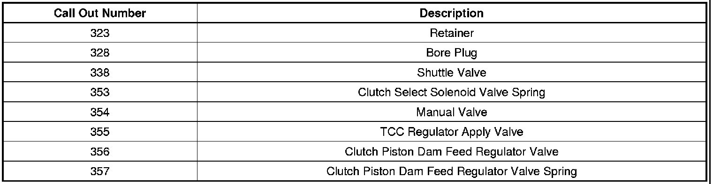
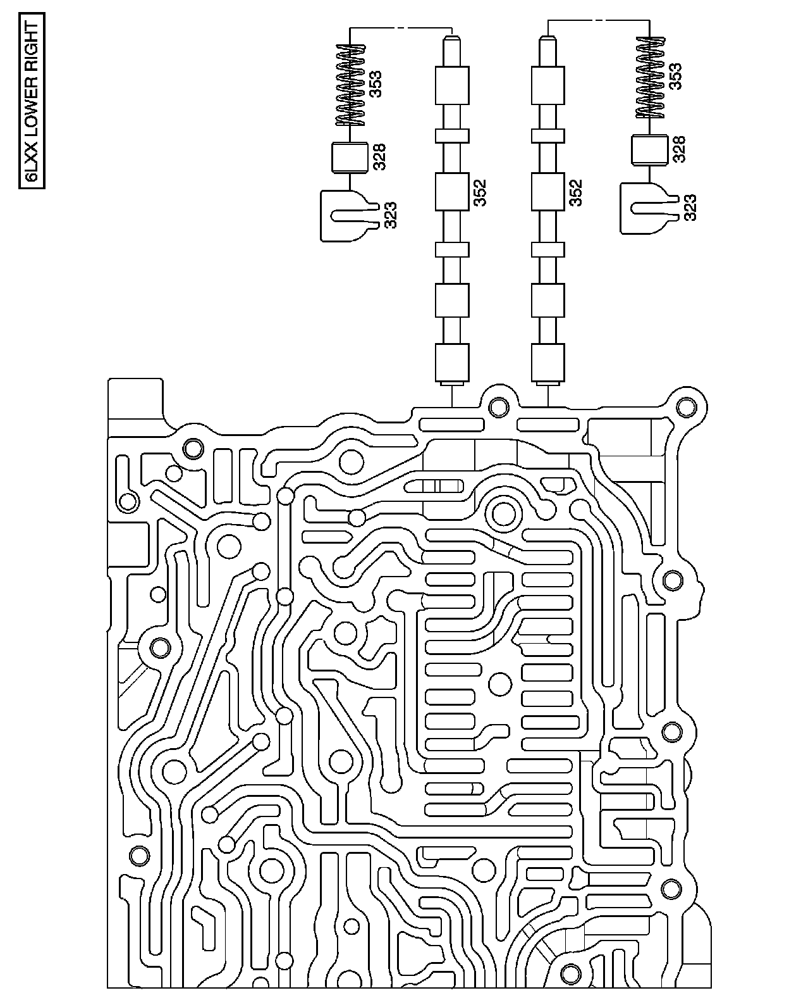
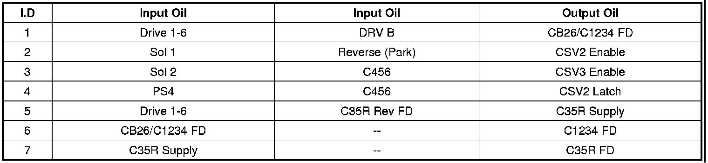
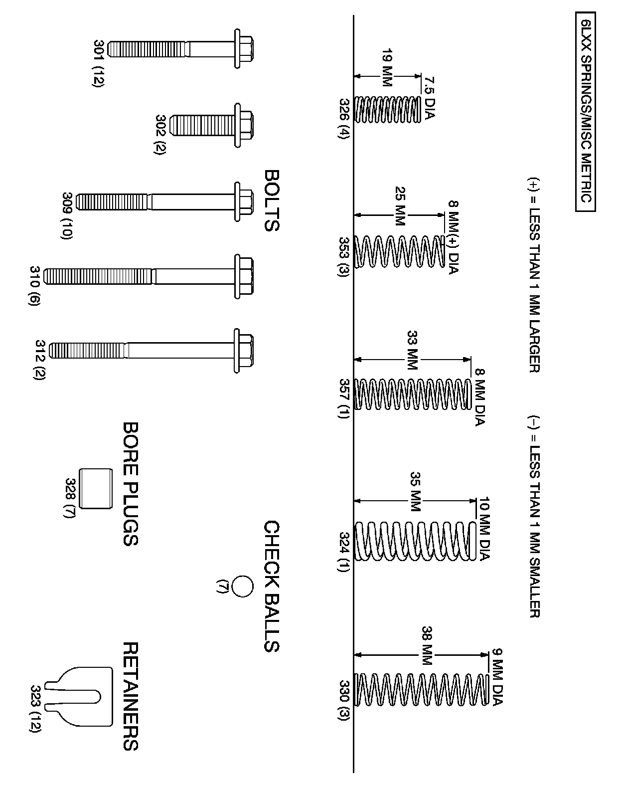
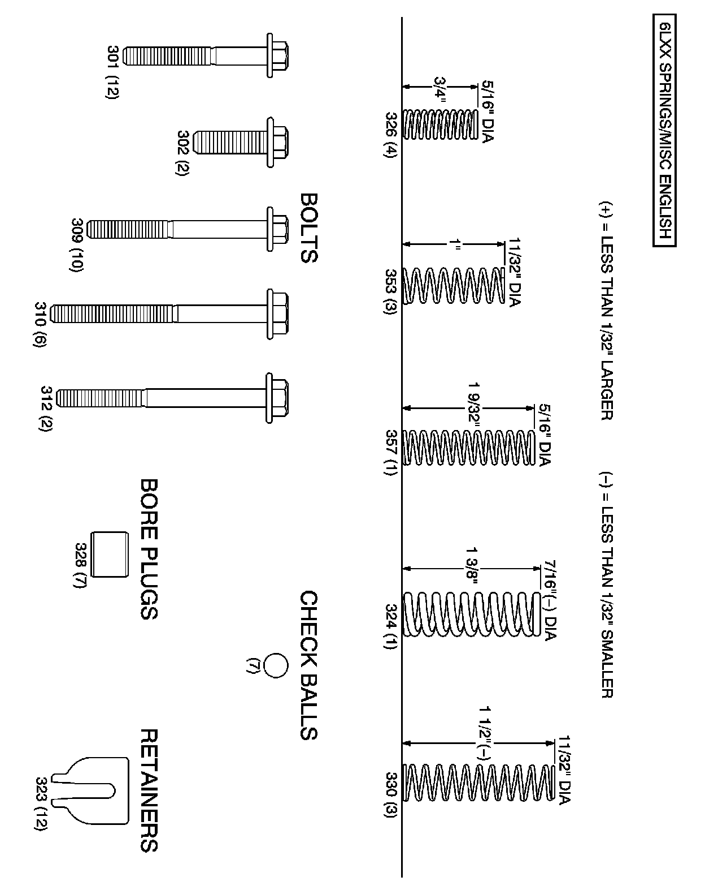

A/T - Valve Body Reconditioning Info.
INFORMATIONBulletin No.: 08-07-30-006A
Date: October 13, 2009
Subject: HYDRA-MATIC(R) 6L45 (MYA), 6L50 (MYB), 6L80 (MYC) and 6L90 (MYD), Rear Wheel Drive Automatic Transmission Control Valve Body Assembly Reconditioning
Models:
2006-2009 Cadillac XLR
2006-2010 Cadillac STS
2007-2009 Cadillac SRX
2007-2010 Cadillac Escalade, Escalade ESV, Escalade EXT
2008-2010 Cadillac CTS
2006-2010 Chevrolet Corvette
2007-2010 Chevrolet Silverado
2008-2010 Chevrolet Suburban
2009-2010 Chevrolet Avalanche, Tahoe
2007-2010 GMC Sierra, Sierra Denali, Yukon Denali, Yukon Denali XL
2008-2010 GMC Yukon XL
2009-2010 GMC Yukon
2008-2009 Pontiac G8
2008-2009 HUMMER H2
with 6L45, 6L50, 6L80 or 6L90 HYDRA-MATIC(R) Rear Wheel Drive Automatic Transmission (RPOs MYA, MYB, MYC, MYD)
Supercede:
This bulletin is being revised to update model years and add 6L45 transmission (RPO MYA). Please discard Corporate Bulletin Number 08-07-30-006 (Section 07 - Transmission/Transaxle).
The information outlined in this bulletin is designed to provide easy to follow control valve body reconditioning instructions using the new illustrations to simplify reassembly of the 6L45, 6L50, 6L80 and/or 6L90 automatic transmission control valve body assembly.
Caution
Valve springs can be tightly compressed. Use care when removing retainers and plugs. Personal injury could result.
Notice
After cleaning the transmission components, allow to air dry. Do not use cloth or paper towels in order to dry any transmission components. Lint from the towels can cause component failure.
Notice
Do not reuse cleaning solvents. Previously used solvents may deposit sediment, which may damage the component.
Inspection Procedure for Shift Concerns
1. Using the exploded view, inspect each bore for freedom of valve(s) movement and evidence of debris. Pay particular attention to those valves related to the customer's concern. IF VALVE BODY CLEANING IS NOT REQUIRED, DO NOT DISASSEMBLE THE BORES UNLESS IT IS NECESSARY TO VERIFY MOVEMENT.
2. Verify movement of the valves in their normal installed position. Valves may become restricted during removal or installation. This is normal due to small tolerances between the valves and bores.
3. If a valve is restricted and cannot be corrected by cleaning the valve and bore, replace the valve body. Describe the restricted valve on the repair order.
Disassembly/Reassembly for Cleaning Debris
1. If a valve is restricted by a metal burr from machining that bore, remove the valve and burr. Inspect the movement in the valve's normal position. If no other debris or restrictions are found, reassemble the valve body and install in the transmission.
2. If the valve body has been contaminated with debris from another transmission component failure, disassemble all bores for complete cleaning of all valve body components. Keeping individual bore parts separated will make reassembly easier. Use the following illustrations for positive identification and location of individual parts.
3. Using GM Brake Clean, or equivalent, in a safe and clean environment (clean aluminum pan), clean the valve body and dry it with compressed air. Use appropriate eye protection.
4. Clean individual valve body components with GM Brake Clean, or equivalent. Coat each valve with clean ATF and reassemble in each bore. Check each valve for free movement during assembly of each bore.
Important
Position the valve body as shown in the following illustrations for positive identification and location of individual parts.








Control Valve Body Spring, Bolt, Bore Plug and Retainer Identification Chart (Metric)


Control Valve Body Spring, Bolt, Bore Plug and Retainer Identification Chart (Inch)

Disclaimer